55 سمة بنقرة واحدة
يرتدي NikPak وunNik السمات نفسها التي في Nikkomander، من Nikkoid Blue إلى Pizza وMatrix و8-Bit Game. اختر واحدة فيحتفظ بها البرنامجان.
طريقة العمل
- زر السمات: زر لوحة الألوان في شريط العنوان يفتح قائمة السمات. يُفتح الصندوق بجانب النافذة لتبقى الواجهة كلها ظاهرة: انقر سمة لتجربتها على النافذة.
- تطبيق أو إلغاء: يُسحب الصندوق من شريط عنوانه. تطبيق السمة يحتفظ بها لـ NikPak وunNik؛ وإلغاء (أو Esc) يعيد السمة السابقة.
- الشمس والقمر: الزر المجاور يبدّل بنقرة واحدة بين Nikkoid Blue (داكنة) وNikkoid Bright، كما في Nikkomander.
- محفوظة: تُحفظ السمة المختارة وتُستخدم عند التشغيل التالي. يتشارك NikPak وunNik السمة: غيّرها في أحدهما فيتبعه الآخر خلال ثوانٍ.
- مرسومة ومسطحة: 41 سمة مأخوذة من تدرّجات CSS في Nikkomander — خطوط ونجوم وطوب — و14 سمة جديدة يرسم NikPak خلفيتها بنفسه: عاصفة، جبال عند الغسق، شارع نيون، حواسيب قديمة، رقعة شطرنج. تبقى واضحة بأي حجم نافذة. ومنذ الإصدار 1.6.2، تتراجع اللوحات المرسومة إلى خلف الواجهة — تُنعَّم وتُخَفَّت خلف العنوان وحلقة الإسقاط ونص الحالة — كي لا تزاحم النافذة.


أربع عشرة سمة مرسومة جديدة
القمر، أمريكا، بتايا نيون، برغر طوكيو، سوشي، أميغا، MSX، كوليكوفيجن، ZX سبكترم، حياة القطط، حياة الكلاب، ماريو بروس، كاونتر سترايك والشطرنج: يرسم NikPak لوحاتها بنفسه، لا تدرّجًا، فتبقى واضحة بأي حجم نافذة.


المعرض
NikPak بكل سمة. انقر على صورة لعرضها بالحجم الكامل.


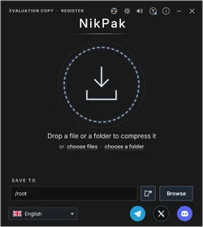

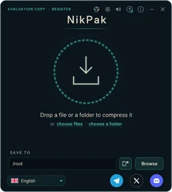

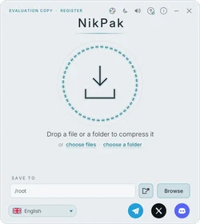

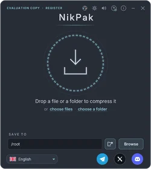


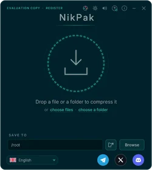

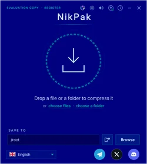

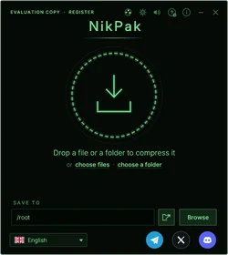

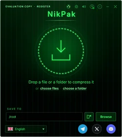

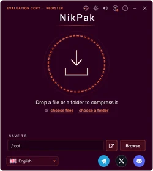

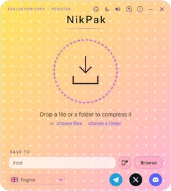

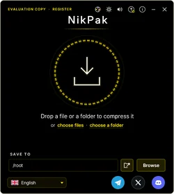

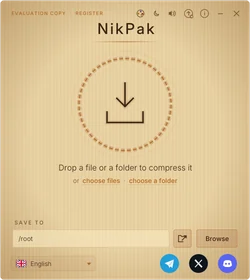

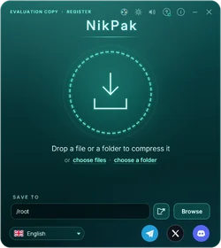

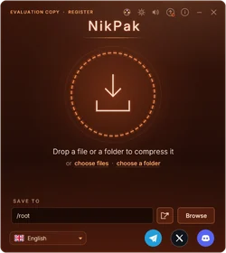

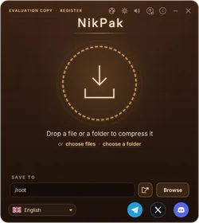

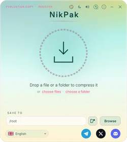

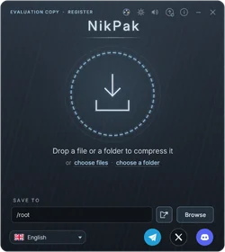

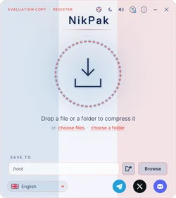

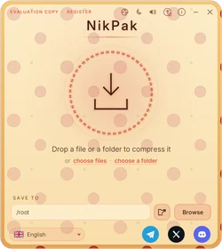

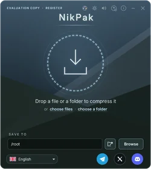

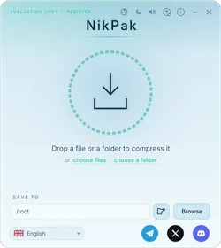

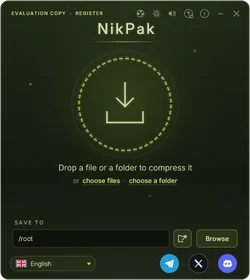

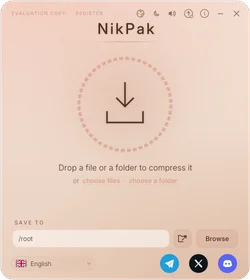

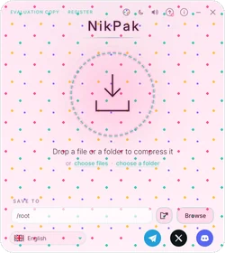

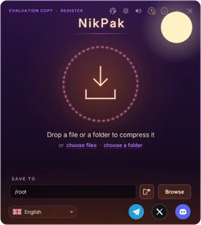

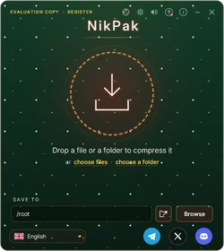

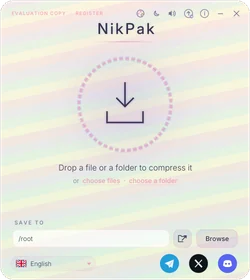

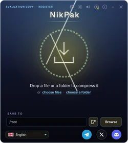

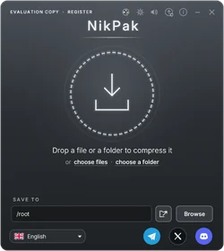

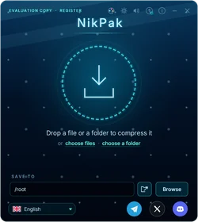

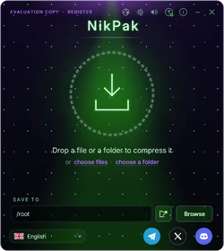

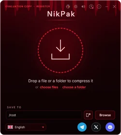

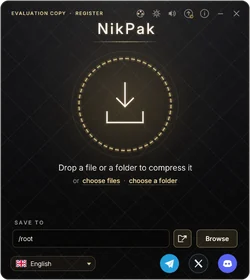

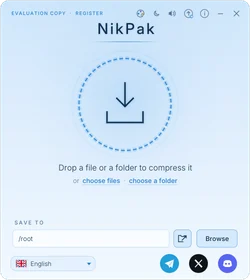

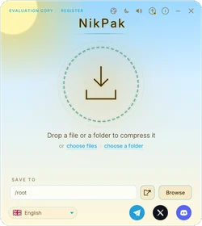

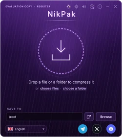

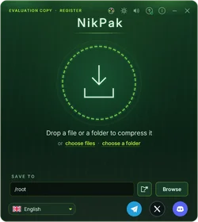


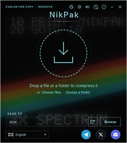

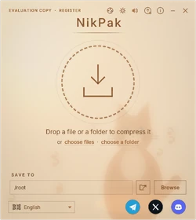

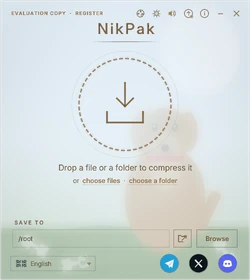

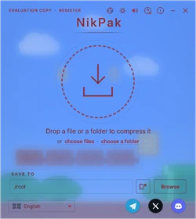

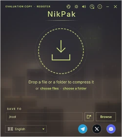

وunNik أيضًا
يتبع متصفح الأرشيفات السمة نفسها: المجلدات وأيقونات الملفات والتحديد والنوافذ الحوارية تأخذ ألوانها.
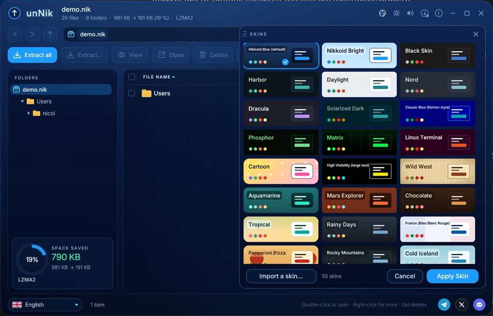
سماتك الخاصة
السمة ملف صغير .skin.json: اسم وقائمة ألوان، بالتنسيق نفسه المستخدم في Nikkomander. انقر استيراد سمة… أسفل قائمة السمات: يُنسخ الملف إلى مجلد skins بجوار الإعدادات، وتزيله العلامة × على مربعه.
{
"id": "ocean-glass",
"name": "Ocean Glass",
"dark": true,
"vars": {
"bg": "#06121f",
"panel": "#0b2236",
"dialog": "#0d2740",
"fg": "#d7e6f2",
"fg-dim": "#7897ad",
"accent": "#4cc2ff",
"accent-fg": "#031521",
"border": "#1b4160",
"danger": "#ff6b6b",
"ok": "#6be3a4",
"radius": "14px"
}
}
جرّب NikPak الآن
برنامج تثبيت واحد يثبّت NikPak وunNik. لا حاجة إلى التسجيل للبدء.